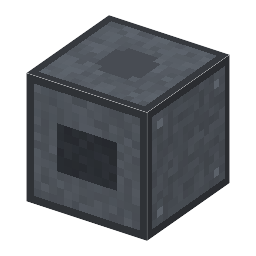

説明
①子ども 交流の電圧を変える。後ろ＝入力、前＝出力。片側に銅ケーブル、反対側に高圧の電線。
②学生 1つの鉄心に2つのコイル：電圧の比＝巻き数の比。交流でしか働かない（直流では磁束が変わらない）。効率 98%。
③大人 1885年、ブダペストのガンツ社のジペルノフスキー・ブラーティ・デーリが閉じた鉄心の変圧器（ZBD）を出願した。これで遠くへ送る電気は交流が勝った。
④ガチ 大きな変圧器が失うのは 1〜2%（鉄と銅の熱）。そばで聞こえるブーンという音は、鉄心が1秒に100〜120回のびちぢみする音。